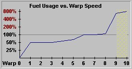

Warp Speed
More about Fleets
Playing Stars!
A fleet's warp speed determines the number of years it takes to reach a waypoint, as well as fuel usage. You set the speed in the Fleet Waypoints tile, using warp units. Actual distance traveled is the square of the warp speed. For example, a fleet traveling at Warp 8 moves up to 64 light years each turn.
The Fleet Waypoints tile always suggest an optimum speed to reach the waypoint, using the least amount of fuel to deliver the fleet in the shortest amount of time. If a stargate is present and safe to use for travel between waypoints, it is automatically selected. If the fleet has Scrap Fleet or Colonize orders, or includes a hull with a colony pod, the fleet travels at the maximum possible speed for its engine and fuel supply.
Maximum Speed
All engines have an absolute maximum speed, a maximum safe speed, a maximum free speed and an optimum speed.
The absolute maximum speed for all engines is warp 10. The maximum safe speed for most ships is warp 9. You can push your fleet to warp 10, but you'll have a 10% chance of losing each ship in the fleet at that speed. Only ships using Warp 10 capable engines can travel safely at warp 10. You can tell if an engine is warp 10 capable by viewing it in the Technology Browser and seeing if the area between Warp 9 and 10 is covered with a yellow warning pattern or not.
For most standard engines the maximum free speed is warp 1. This means that you can travel at warp 1 using no fuel.
For standard engines the optimum or best warp speed is the maximum speed at less than 120% fuel usage. For Ramscoop engines the best warp speed is the maximum speed that the engine can travel using no fuel. To learn the best speed for a specific engine, visit the Engines section of the Technology Browser. The Fuel Usage vs. Warp Speed graphs in the Browser shows this speed for each engine. The following graph shows that the best warp speed for this engine is warp 8.

The yellow grid between warp 9 and 10 shows the ship using that engine has a 10% chance of self-destructing while traveling at warp 10.
The Galaxy Scoop engine defaults to Warp 10 if going that speed will reduce travel time. See the Engines section of the Technology Browser for more information.
Travel Warp 1 without Using Fuel
Any ship can travel Warp 1 without using fuel. This means you travel 1 light year per year of play. You also generate tiny amounts of fuel at Warp 1, and may be able to put on snall bursts of speed. This really is helpful only if you're close to your destination, almost out of fuel, and don't want to bother sending a rescue ship.
Learn more about
Navigation Using Stargates